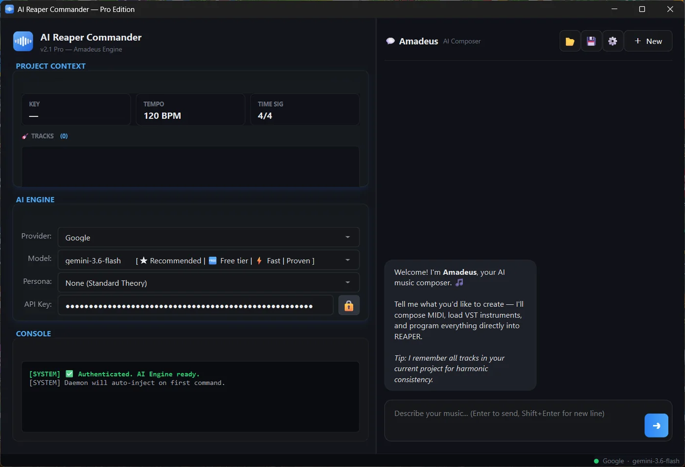

AuraLink Studio / AI Reaper Commander
Bản chính thức v2.1.0 · Windows & macOSBạn nói muốn gì bằng câu nói thường; trợ lý "Amadeus" hiểu rồi tự làm ngay trong REAPER — dựng track, đi đường tiếng, chỉnh mix, viết cả MIDI và nạp nhạc cụ. Bạn giữ phần sáng tạo, nó nhận phần thao tác lặp đi lặp lại.

Nói như nói với người: tạo track, tách bè, dựng bus, chỉnh gain. Không phải nhớ phím tắt hay đi tìm menu.
Viết MIDI, nạp nhạc cụ ảo và dựng phần đệm ngay trong REAPER — không phải chép tay từ chỗ khác về.
Tự chọn nhà cung cấp AI và mô hình, kể cả loại đang miễn phí. Đổi phong cách làm việc của trợ lý bằng persona.
Thiết lập nhanh, dùng ổn định lâu dài — không phải đăng nhập lại mỗi lần mở.
Biết dự án đang ở tone nào, tempo bao nhiêu, có sẵn những track gì — nên đề xuất luôn hợp với bản phối.
Cả buổi làm việc lưu lại được; mở lên là đúng chỗ đang dở, đủ ngữ cảnh và lịch sử trò chuyện.
› Tạo cho tôi 4 track trống có sidechain.
⟳ Đang tạo track… ✓
⟳ Gán bus sidechain… ✓
⟳ Route send −6 dB… ✓
Xong. 4 track sẵn sàng, sidechain đã nối.
Cả hai bản đều đã hoàn thiện và chạy thật. Bản macOS đã được Apple công chứng nên cài đặt không bị hệ thống chặn.